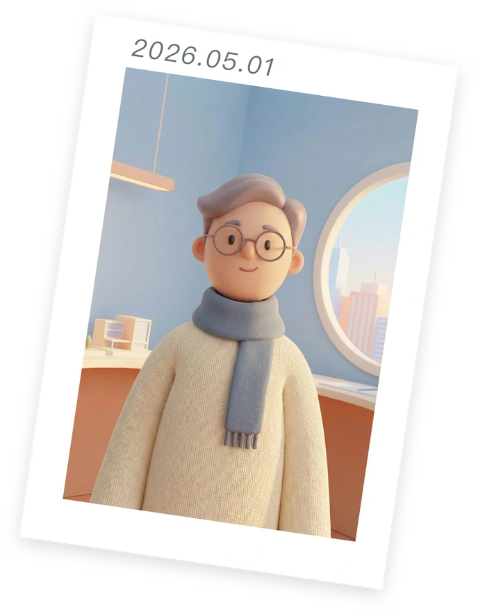
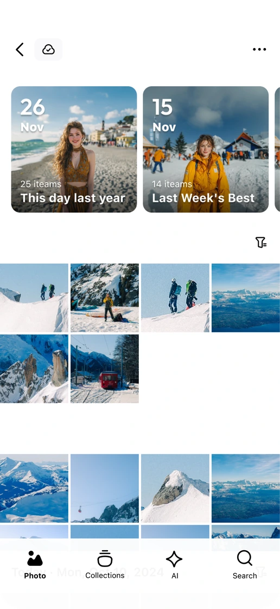
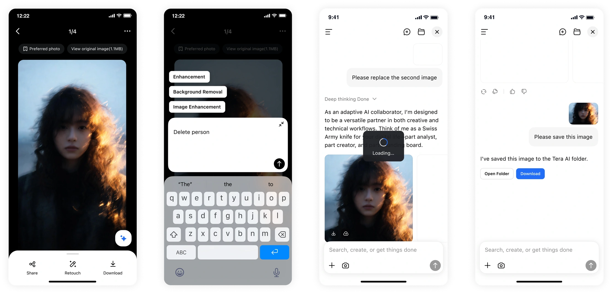
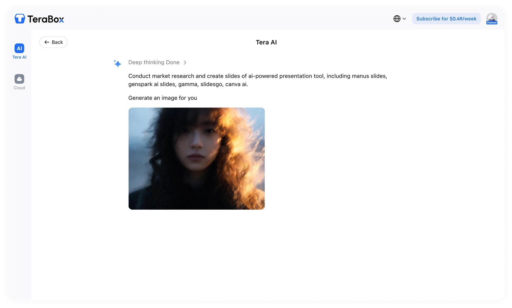
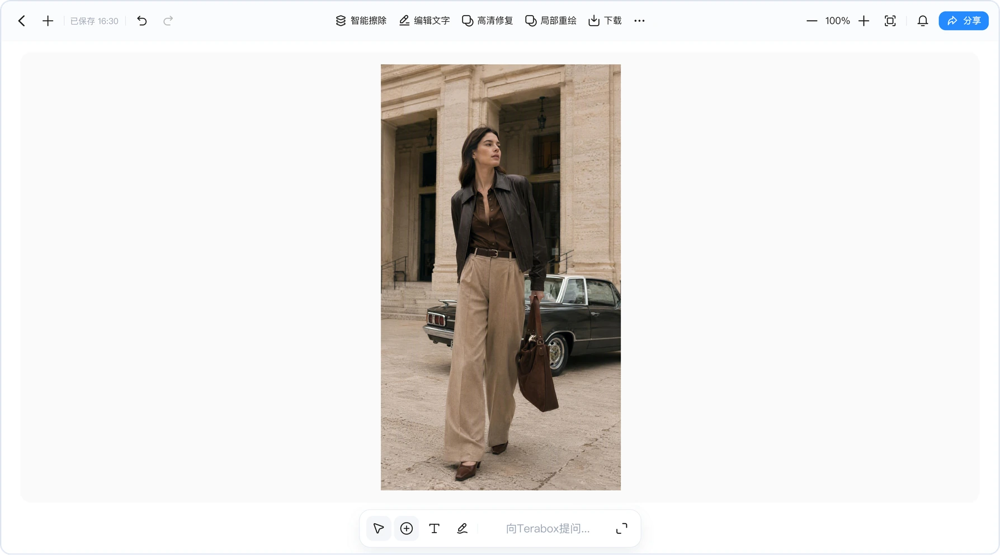
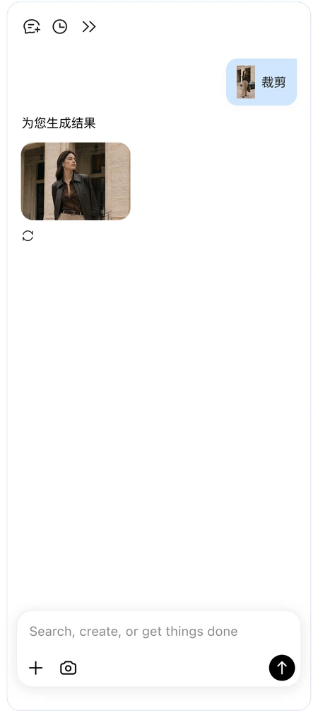
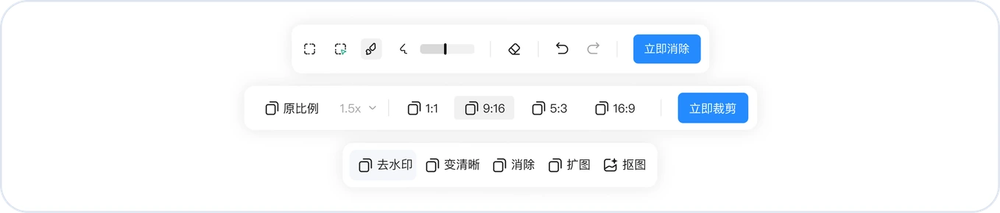

4
Terabox
Terabox 是百度网盘海外版本，主打内容 + AI，海外方向重点强化多模态与 AI 能力。
我参与了 Terabox 图片编辑器场景的海外迁移，为 Terabox 相册内容丰富可用的编辑能力。



Problem
目前各业务的图像编辑能力参差不齐，当用户对照片进行修图时往往面临两个选择，美颜、滤镜类传统编辑器工具，和风格化、扩图类AI生成工具，两套能力彼此割裂，给用户带来前置的判断阻碍。对用户而言只需要让图像更好看，在产品上需将国内编辑器优化迁移到海外场景。
国内已有成熟的编辑器体系，海外端能力相对薄弱，借此机会优化交互框架，通过Agent打通后端AI生成能力，通过AI编辑器支持前端高效交互。打造GUI + LUI的新AI交互框架各业务快速接入，合成为一套体系，并落地手势&语音等亮点创新交互，进一步降低操作门槛。
Solution

相册页交互
路径入口决策。
最初可选的方向有两个，做一个独立的AI编辑页面，或者把AI能力嵌进用户已有的浏览路径。我们选择了后者，在一级大图预览页底部直接放输入框来跳转Agent。
理由是，独立页面需要被发现，而用户的修图行为往往是正在看这张照片的时候。让用户先退出预览、去别处找入口，等于在意图最强的瞬间制造一次流失。
图片始终是视觉中心，AI是辅助层。输入框还需要解决不知道该说什么的冷启动问题，自然语言交互最大的门槛不是打字，是用户面对一个空输入框时想不出要写什么。针对这一点我们做了三层引导：
默认文案用动作而非提示：“输入你要修改的内容”，直接为用户出提供行为方向
未点击时随机展示 query 示例，让用户在决定阶段先了解到可以这么问。
点击后推荐配置好的sug，点选即直接发起，不做二次确认，减少从想法到结果的步数。
...

Agent交互及对话流
LUI 与 GUI 的双向流通。
对于对话流图片产品，大部分市面Agent产品独立于编辑器，只针对Agent内部外置了一些预设风格，甚至非图片编辑内容Agent会拒绝回答。而对于非对话流产品，Agent入口较深，且不支持多张生成。
这是产品流程中的关键一环，生成结果不是使用路径的终点，因此我们采取了一些做法。
生成结果支持单张或多张，由用户决定。
结果图可进入编辑器精修，自然语言擅长表达用户想要什么感觉，图形界面擅长精细化编辑，两者各有不可替代的场景。
编辑器保存后按来源回流：从Agent进来的回Agent，从大图页进来的回大图页，使路径闭环。
手动编辑也被纳入对话叙事，若用户在编辑器改过图，回到Agent会补全一轮对话这样，防止会话记录里的图像变化断点。
多轮对话基于用户最新编辑后的图片继续，而非退回原图。
对话框支持重试，带相同 query+图片重新发起。
...



编辑器功能场景。
对市场AI创作工具竞品追踪，Agent+无限画布的产品形态更适合创作。
具体行为是将目前对AI Edit替换成图片编辑器，并且在Agent场景中点击图片可跳转至编辑器页。保留图编，如调色、美颜等可以直接迁移新图片编辑器能力，由新编辑面板承接；更新图创，如AI特效、图片动起来 、智能擦除；其他内容如提取文字、翻译等，非美图功能保持现有链路。
工具依据使用频次与迁移成本平衡功能优先级排序。
关于Agent，已经在大图预览页承担了意图入口，编辑器应保持工具属性的纯粹，用户进到编辑器时，动机已经是自己动手修图，此时插入对话框反而是干扰，只有当完成编辑操作或主动对话时，Agent才会弹出。
改图沿用国内的模型，海外支持同样模型，保持能力一致性，避免国内外效果分裂。
...
Terabox的产品内容不多，并且对于编辑器功能有了之前的经验，整个开发过程也不算太难。但在前期调研时，由于同类产品还比较少，并且不同的产品场景也都不同，模仿竞品功能应用到自己产品的场景上还能不能成立呢？于是功能设计上也陷入了纠结的状况。在项目过程中，我不断研究各个功能到底在为什么服务，是视觉调性、用户理解成本还是体验流程，再去一一梳理并明确首要的方向，决策就变得更为清晰了。
总之，AI产品与传统产品的不同点在于，即便是应用层面的内容，也更应该推动模型与产品迭代，而不是只关注前端视觉与交互（这虽然也很重要）。
Outcome
当然，一个完整的项目肯定不止这些，这仅是我所参与的部分，感兴趣的话找我聊聊。